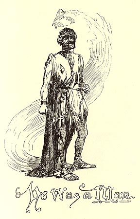

|
 Hank notes that King Arthur's body could be chained and beaten, but his spirit could not be broken. Despite all his violent attempts to tame Arthur, "even that dull clod of a slave-driver" is eventually forced to realize "that there can be such a thing as a slave who will remain a man till he dies." This is a stirring tribute to an innate humanity, but it has to be noted that no MT narrator ever says the same thing about any black slave in the U.S, and none of the illustrations of American slaves in MT's books ever show a slave standing this tall and proud despite his enslavement. The closest we get to that is the scene at the end of Chapter 15 in Huck Finn, where Jim eloquently asserts his human dignity by rebuking Huck for "mak[ing] a fool uv ole Jim wid a lie." It's interesting that no American illustrated edition has ever chosen to include a picture of that scene. The Barrett Collection, UVA PS1308 .A1 1889 |